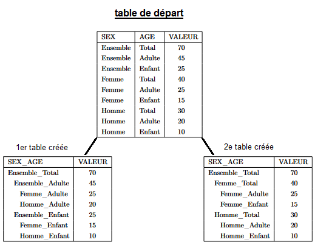
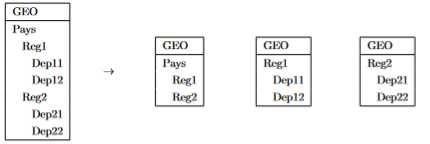

Comment poser du secret sur des tableaux à 4 ou 5 dimensions avec `rtauargus`?
vignettes/split_tab_fr.Rmd
split_tab_fr.RmdLes algorithmes de pose du secret secondaire tels qu’Optimal ou
Modular implémentés dans Tau-Argus reposent sur un
programme d’optimisation sous contraintes. Le nombre de ces constraintes
devient très difficile à gérer - du moins dans un temps raisonnable -
pour Tau-Argus. La pose du secret sur un tableau à 5
dimensions directement avec Tau-Argus est impossible et les
résultats fournis par le logiciel lors du traitement d’un tableau de 4
dimensions sont accompagnés d’un avertissement. Par ailleurs, un tableau
à 4 dimensions dont l’une est hiérarchique est un problème, en général,
très difficile pour Tau-Argus.
Le package rtauargus offre désormais la possibilité de
protéger des tableaux de 4 à 5 dimensions. Pour les tableaux de 4
dimensions, la protection est même plus rapide et permet de traiter des
tableaux plus grands encore (en nombre de lignes). Certains tableaux
demeurent néanmoins trop complexes pour Tau-Argus.
Cette nouvelle fonctionnalité est mise à disposition dans les
fonctions tab_rtauargus et tab_multi_manager
avec l’argument split_tab. Quand il est renseigné à
TRUE, les fonctions réduisent la dimension d’un tableau de
4 ou 5 dimensions en construisant un certain nombre de tableaux liés de
3 dimensions chacun. Ces tableaux contiennent exactement les mêmes
cellules que le tableau original. Puis, la fonction
tab_multi_manager est appelée pour organiser la pose du
secret sur l’ensemble de ces tableaux. `A la fin du processus, on
récupère la table de départ - avec ses dimensions originales - augmentée
des informations sur le secret secondaire.
Ainsi, point important à retenir, la pose du secret secondaire est
toujours réalisée par les algorithmes de Tau-Argus, le
package rtauargus ne fait que découper le tableau en
sous-tableaux à trois dimensions et assurer la cohérence du secret entre
ces différents sous-tableaux liés entre eux.
Cette méthode est susceptible de générer plus de secret qu’une attaque directe du problème. Mais celle-ci étant impossible dans les cas visés, c’est un moindre mal.
Pour utiliser cette fonctionnalité, il est nécessaire que l’utilisateur pose de lui-même le secret primaire en amont.
Comment la réduction d’un tableau à 4 ou 5 dimensions est-elle réalisée ?
Pour passer de 5 à 3 dimensions, on utilise deux fois de suite la méthode utilisée pour réduire un tableau en sous-tableaux ayant une dimension de moins.
Le passage de 4 à 3 dimensions consiste d’abord à fusionner deux des quatre dimensions du tableau original, c’est-à-dire qu’on remplace deux des variables de départ par une seule dont les modalités sont la fusion des modalités des deux variables choisies.
Dans l’exemple ci-dessous, on fusionne par exemple les deux variables
SEX et AGE pour n’en faire qu’une seule
appelée SEX_AGE.

Mais, la nouvelle variable contient des modalités non-emboîtées entre
elles, comme, par exemple, les modalités Femme_Total et
Ensemble_Adulte.
Total_Ensemble = Total_Adulte + Total_EnfantTotal_Ensemble = Femme_Ensemble + Homme_EnsembleOr, nous savons gérer la présence de hiérarchies non-emboîtées dans
un tableau. Il suffit, en effet, de construire les sous-tableaux de même
structure de telle sorte que dans chacun de ces sous-tableaux la
variable incriminée soit restreinte à une partie parfaitement emboîtée
de ses modalités. Pour poser le secret sur les sous-tableaux liés
engendrés, il est fait appel à la fonction
tab_multi_manager, spécialement conçue pour assurer la
cohérence du secret entre tableaux liés.
Ici, la fusion nécessite la construction de deux sous-tableaux,
chacun ayant une variable SEX__AGE parfaitement
hiérarchique. Le premier rassemble les modalités
Total_Ensemble, Total_Adulte et
Total_Enfant, le second Total_Ensemble,
Femme_Ensemble et Homme_Ensemble.
Cet exemple est le plus simple qu’il soit: en fusionnant deux variables non hiérarchiques, on est amené à générer deux sous-tableaux.
Lorsque l’une des variables fusionnées est elle-même hiérarchique, la construction des sous-tableaux s’appuie sur les différents sous-totaux présents dans la hiérarchie, comme indiqué dans la figure ci-dessous:

Les principaux arguments ajoutés à tab_rtauargus() et
tab_multi_manager()
Pour activer le découpage des tableaux de dimension 4 ou 5 en
sous-tableaux de 3 dimensions, l’utilisateur doit activer l’argument
split_tab en le passant à TRUE. Cette valeur
est sa valeur par défaut. Ainsi, l’utilisateur veillera à passer cet
argument à FALSE s’il souhaite qu’un tableau à 4 dimensions
soit traité directement par Tau-Argus.
L’argument nb_tab_option permet de préciser la façon
dont le tableau est découpé:
- L’option
"min"consiste à construire le minimum de tables à 3 dimensions lors de la fusion. Ce sont donc des variables non hiérarchiques qui seront fusionnées en priorité. - L’option
"max"au contraire construit le maximum de tables à 3 dimensions possible lors de la fusion. Ce sont donc des variables hiérarchiques qui seront fusionnées en priorité. Cette option est intéressante pour réduire la taille des sous-tableaux produits et donc augmenter les chances queTau-Arguspuisse les traiter. L’inconvénient de cette option est qu’elle peut générer un très grand nombre de tableaux, nombre dépendant du nombre de noeuds dans les hiérarchies. - L’option
"smart"va chercher à construire le minimum de tables à 3 dimensions tout en cherchant à respecter une limite de taille (nombre de lignes) pour les sous-tableaux construits. Cette limite est fixée par l’argumentlimit. Par défaut, la valeur est fixée à14 700- choisie de par notre expérience. Si la limite n’est pas atteignable, un avertissement est affiché mais cela ne bloque pas la construction des tables et la pose du masque.
Par défaut, l’argument nb_tab_option est fixé à
"smart". Il est déconseillé de changer cette valeur dans un
premier temps.
- L’argument
nb_tab = "min"est intéressant en termes de secret car c’est l’option qui génèrera le moins de sur-secret puisqu’elle construira le moins possible de sous-tableaux liés. Il peut être intéressant à utiliser si la table de départ contient un nombre de lignes raisonnables, c’est-à-dire si chaque dimension n’est pas trop ventilée. - L’argument
nb_tab = "max"créant le plus de tableaux possibles engendrera nécessairement le plus de secret, mais elle pourra aussi convenir quand les tableaux d’origine sont très longs et nécessitent d’être beaucoup découpés pour que la pose du secret soit possible avecTau-Argus.
Exemple
Comme tout est géré par la fonction tab_rtauargus, la
pose du secret sur un tableau à 4 ou 5 dimensions n’ajoute pas de
difficultés particulières pour l’utilisateur en réalité.
Nous présentons ici un exemple de pose de secret sur un tableau à 4 dimensions.
Préparation des données
options(
rtauargus.tauargus_exe =
"Y:/Logiciels/TauArgus/TauArgus4.2.3/TauArgus.exe"
)
data("datatest1")
str(datatest1)
#> tibble [689 x 12] (S3: tbl_df/tbl/data.frame)
#> $ treff : chr [1:689] "tr1" "tr2" "tr3" "Total" ...
#> $ cj : chr [1:689] "Total" "Total" "Total" "PA" ...
#> $ type_distrib : chr [1:689] "Total" "Total" "Total" "Total" ...
#> $ A10 : chr [1:689] "Total" "Total" "Total" "Total" ...
#> $ nb_obs : num [1:689] 227093 7803 227 1443 125904 ...
#> $ pizzas_tot : num [1:689] 5900938 6538420 6794859 15128 10168928 ...
#> $ pizzas_max : num [1:689] 135444 267177 852749 2756 523505 ...
#> $ is_secret_freq: logi [1:689] FALSE FALSE FALSE FALSE FALSE FALSE ...
#> $ is_secret_dom : logi [1:689] FALSE FALSE FALSE FALSE FALSE FALSE ...
#> $ is_secret_prim: logi [1:689] FALSE FALSE FALSE FALSE FALSE FALSE ...
#> $ nb_obs_rnd : num [1:689] 227094 7804 228 1444 125905 ...
#> $ pizzas_tot_abs: num [1:689] 5900938 6538420 6794859 15128 10168928 ...
#> - attr(*, ".internal.selfref")=<externalptr>Pose du secret secondaire avec rtauargus
Pour poser le secret secondaire, on utilise la fonction
tab_rtauargus avec l’argument
split_tab = TRUE. Ainsi, Tau-Argus n’aura pas
à traiter directement le secret sur la table à 4 dimensions. La fonction
tab_rtauargus va découper la table originale en un certain
nombre de tables qui seront protégées comme des tables liées avec un
appel sous-jacent à tab_multi_manager.
tictoc::tic()
res_wi_split <- tab_rtauargus(
tabular = datatest1_with_prim,
files_name = "datatest1",
dir_name = "example_1",
explanatory_vars = explanatory_vars,
totcode = totcode,
value = "pizzas_tot",
freq = "nb_obs",
secret_var = "is_secret_prim",
verbose = TRUE,
split_tab = TRUE
)
#>
#> Reducing dims...
#> tab
#>
#> Choosing variables...
#>
#> Reducing from 4 to 3...
#> tab has generated 2 tables in total
#>
#> Spliting...
#> treff___cj
#> tab has generated 2 tables in total
#>
#> --- Current table to treat: tab1 ---
#> --- Current table to treat: tab2 ---
#> --- Current table to treat: tab1 ---
#> --- Current table to treat: tab2 ---
#> --- Current table to treat: tab1 ---
tictoc::toc()
#> 45.31 sec elapsedLa réduction de dimensions a conduit à construire deux sous-tableaux de 3 dimensions à partir du tableau original.
str(res_wi_split)
#> 'data.frame': 689 obs. of 17 variables:
#> $ treff : chr "Total" "tr1" "tr1" "tr1" ...
#> $ cj : chr "Total" "LL" "SP" "Total" ...
#> $ type_distrib : chr "1" "1" "1" "1" ...
#> $ A10 : chr "AZ" "AZ" "AZ" "AZ" ...
#> $ nb_obs : num 115 89 21 110 6 ...
#> $ pizzas_tot : num 8447 769 1301 532 7915 ...
#> $ pizzas_max : num 1471.2 13.8 96.4 96.4 1471.2 ...
#> $ is_secret_freq: logi FALSE FALSE FALSE FALSE FALSE FALSE ...
#> $ is_secret_dom : logi FALSE TRUE FALSE FALSE FALSE FALSE ...
#> $ is_secret_prim: logi FALSE FALSE FALSE FALSE FALSE FALSE ...
#> $ nb_obs_rnd : num 115 89 21 110 6 ...
#> $ pizzas_tot_abs: num 8447 769 1301 532 7915 ...
#> $ is_secret_1 : logi FALSE TRUE FALSE TRUE TRUE TRUE ...
#> $ is_secret_2 : logi FALSE TRUE TRUE TRUE TRUE TRUE ...
#> $ is_secret_3 : logi FALSE TRUE TRUE TRUE TRUE TRUE ...
#> $ is_secret_4 : logi FALSE TRUE TRUE TRUE TRUE TRUE ...
#> $ is_secret_5 : logi FALSE TRUE TRUE TRUE TRUE TRUE ...
stats_wi_split <- res_wi_split %>%
rename_with( ~"final_suppress", last_col()) %>%
mutate(
flag = case_when(
is_secret_freq ~ "A",
is_secret_dom ~ "B",
final_suppress ~ "D",
TRUE ~"V"
)
) %>%
count(flag)
stats_wi_split
#> flag n
#> 1 A 79
#> 2 B 35
#> 3 D 278
#> 4 V 297Avec l’option de découpage du tableau de départ, la pose du secret sur le tableau à 4 dimensions génère 278 suppressions secondaires.
Comparaison avec une pose du secret sans réduire la dimension de la table
Tau-Argus est en capacité de poser le secret secondaire
sur un tableau à 4 dimensions avec Modular, mais, en plus
d’émettre un avertissement sur le fait qu’avec ce nombre de dimensions,
la qualité du résultat n’est pas garantie, il est aussi beaucoup plus
long à poser le secret secondaire que lorsqu’il traite deux tables liées
issues du tableau original.
tictoc::tic()
res_wo_split <- tab_rtauargus(
tabular = datatest1_with_prim,
files_name = "datatest1",
dir_name = "example_1/wo_split",
explanatory_vars = explanatory_vars,
totcode = totcode,
value = "pizzas_tot",
freq = "nb_obs",
secret_var = "is_secret_prim",
verbose = TRUE,
split_tab = FALSE
)
#> Warning :
#> It is highly recommended to use split_tab = TRUE when using rtauargus with 4 or 5 dimensions tables.
#> It allows to split the table in several tables with 3 dimensions.
#>
#> With split_tab = FALSE, tauargus treats the table in 4 or 5 dimensions.
#> In this case, the secondary secret may not being optimal according to tauargus itself
#> and the process may take longer.
#> Start of batch procedure; file: Z:\SDC\OutilsConfidentialite\rtauargus\vignettes\example_1\wo_split\datatest1.arb
#> <OPENTABLEDATA> "Z:\SDC\OutilsConfidentialite\rtauargus\vignettes\example_1\wo_split\datatest1.tab"
#> <OPENMETADATA> "Z:\SDC\OutilsConfidentialite\rtauargus\vignettes\example_1\wo_split\datatest1.rda"
#> <SPECIFYTABLE> "treff""cj""A10""type_distrib"|"pizzas_tot"||
#> <SAFETYRULE> MAN(10)
#> <READTABLE> 1
#> Tables have been read
#> <APRIORI> "Z:\SDC\OutilsConfidentialite\rtauargus\vignettes\example_1\wo_split\datatest1.hst",1,",",0,0
#> Apriory file: Z:\SDC\OutilsConfidentialite\rtauargus\vignettes\example_1\wo_split\datatest1.hst has been applied
#> to table: treff x cj x A10 x type_distrib | pizzas_tot
#> Apriori file Z:\SDC\OutilsConfidentialite\rtauargus\vignettes\example_1\wo_split\datatest1.hst has been read
#> <SUPPRESS> MOD(1,5,1,0,0)
#> Start of the modular protection for table treff x cj x A10 x type_distrib | pizzas_tot
#> WARNING: The table has 4 dimensions.
#> Running Modular can take a lot of time and maybe it is difficult to obtain a correct result.
#> Please check the results carefully.
#>
#> End of modular protection. Time used 301 seconds
#> Number of suppressions: 291
#> <WRITETABLE> (1,4,,"Z:\SDC\OutilsConfidentialite\rtauargus\vignettes\example_1\wo_split\datatest1.csv")
#> Table: treff x cj x A10 x type_distrib | pizzas_tot has been written
#> Output file name: Z:\SDC\OutilsConfidentialite\rtauargus\vignettes\example_1\wo_split\datatest1.csv
#> End of TauArgus run
tictoc::toc()
#> 306.34 sec elapsedAvec seulement 689 lignes et aucune variable hiérarchique, la pose
directe du secret prend environ 5 minutes à Tau-Argus.
stats_wo_split <- res_wo_split %>%
mutate(
flag = case_when(
is_secret_freq ~ "A",
is_secret_dom ~ "B",
TRUE ~ Status
)
) %>%
count(flag)
stats_wo_split
#> flag n
#> 1 A 79
#> 2 B 35
#> 3 D 265
#> 4 V 310La pose directe du secret sur le tableau à 4 dimensions génère 265 suppressions secondaires.
On peut observer que le traitement de la table à 4 dimensions directement génère un masque un peu moins chargé en secret: 266 cellules en secret secondaire, contre 278 avec une réduction de dimensions.
Il est difficile d’anticiper cette différence puisqu’elle est très dépendante de la structuration des données, de la présence du secret primaire au sein du tableau original et de la façon dont les sous-tableaux vont être construits.
Détail de la vignette
Authors: Wistan Pomel & Andre-Raymond Socard & Julien Jamme & Nathanael Rastout
Last update: 11/01/2024
Version of rtauargus used: 1.2.0
Version of τ-Argus used : TauArgus 4.2.3
-
R version used : 4.2.3